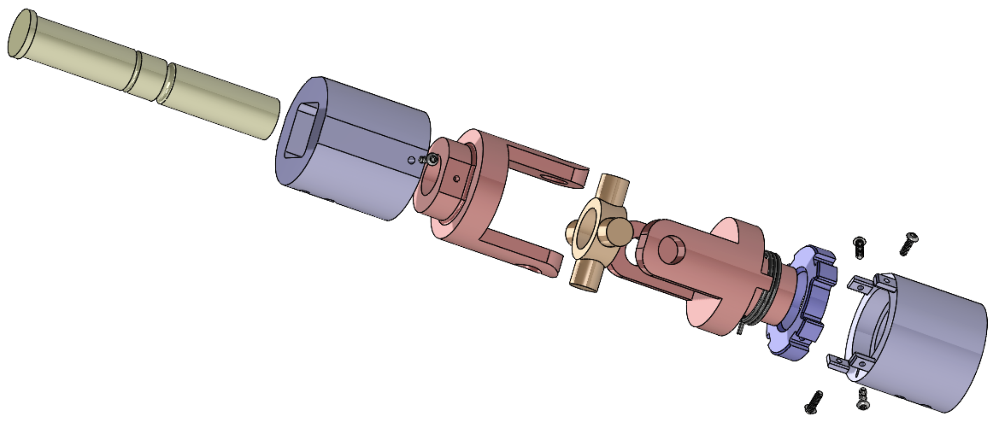

Senior Design
Reactive Road Sign System
Retrofit mechanism concept for stop signs to deflect under extreme hurricane winds and recover. Work includes joint concepting, prototype manufacturing, and load testing.